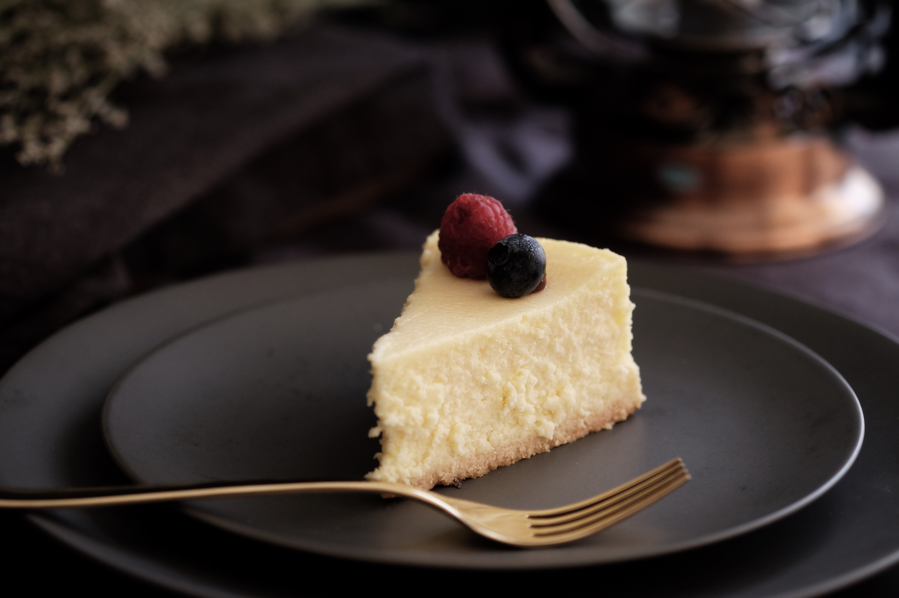

Basic Cheesecake

Photo by Tina Guina on Unsplash
Description
A recipe for a very basic (but delicious) cheese cake!
Servings: 16
Per serving: 375 calories; protein 6g; carbohydrates 23.1g; fat 29.5g; cholesterol 117.3mg; sodium 208.9mg.
Time: 1hr 40mins
Ingredients
- 1 cup graham cracker crumbs
- 1/4 cup finely chooped walnuts
- 3 tablespoons brown sugar
- 1 tablespoon ground cinnamon
- 1/2 teasponn ground nutmeg
- 5 tablespoons butter, melted
- 3 (8 ounces) packages cream cheese
- 1 cup white sugar
- 1 cup sour cream
- 1 cupy heavy cream
- 3 tablespoons all-purpose flour
- 1 tablespoon vanilla extract
- 3 eggs
Steps
- Preheat oven to 350 degrees F (175 degrees C). In a medium bowl, combine graham cracker crumbs, chopped walnuts, brown sugar, cinnamon,
nutmeg and melted butter. Mix well and press into the bottom of a 9 inch springform pan. Bake in preheated oven for 10 minutes.
Remove from oven and allow to cool.
- In a large bowl, beat cream cheese and sugar together until smooth. Beat in sour cream and heavy cream. Blend in the flour and vanilla. With mixer on low speed, add eggs one at a time. Pour batter over crust.
- Bake in the preheated oven for 60 to 70 minutes, or until center is almost set (filling will be soft). Refrigerate at least 6 hours or overnight before removing from pan.
- (Optional) Use some berries, sprinkles, melted chocolate or other candies as decoration for your cake! :)
Return to main page
- Preheat oven to 350 degrees F (175 degrees C). In a medium bowl, combine graham cracker crumbs, chopped walnuts, brown sugar, cinnamon, nutmeg and melted butter. Mix well and press into the bottom of a 9 inch springform pan. Bake in preheated oven for 10 minutes. Remove from oven and allow to cool.
- In a large bowl, beat cream cheese and sugar together until smooth. Beat in sour cream and heavy cream. Blend in the flour and vanilla. With mixer on low speed, add eggs one at a time. Pour batter over crust.
- Bake in the preheated oven for 60 to 70 minutes, or until center is almost set (filling will be soft). Refrigerate at least 6 hours or overnight before removing from pan.
- (Optional) Use some berries, sprinkles, melted chocolate or other candies as decoration for your cake! :)
Return to main page